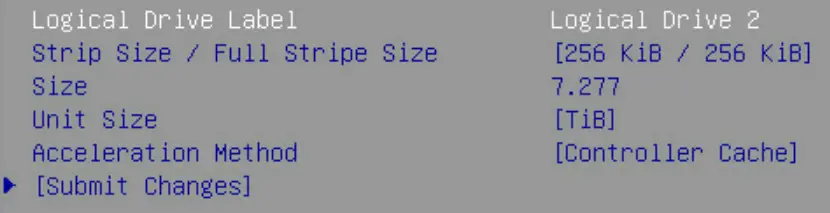

第三代镜像站建设（二）：存储系统设计与测试
镜像站存储系统涉及硬件（磁盘、阵列卡等）和软件（文件系统等）多方面的设计与调优。本文将介绍我们在存储系统设计与测试中的一些经验。
综述¶
阵列卡 H3C P460¶
关于硬 RAID 优劣的探讨，请阅读 金枪鱼之夜：实验物理垃圾佬之乐——PB 级磁盘阵列演进 | 清华大学 TUNA 协会。虽然我们不打算用 RAID 卡来做 RAID，但我们对 RAID 卡的缓存性能感兴趣，希望它可以提升 HDD 的 IO 性能。
P460 阵列卡可以通过 UEFI BIOS 进行配置。H3C 提供的手册并未对各个选项做详细解释，而 Configure Controller Settings - RAID Controller Card User Guide (x86) 12 - Huawei 这份文档提供了详尽的解释。尽管型号不同，但配置选项都是一致的。
阵列卡视角下的设备分为 Raw Disk（直通，可获取磁盘的厂商、序列号等所有信息）和 Logical Volume（阵列卡分配序列号）。
- Mixed 模式：Raw Disk 和 Logical Volume 均对宿主机可见
- RAID 模式：Raw Disk 对宿主机不可见。
下面展示了阵列卡不同模式下可调的配置选项：
-
无逻辑卷时
Configure Controller Settings -> Modify Controller Settings
不论什么模式，如果未配置逻辑卷，阵列卡的可调选项仅有 Write Cache State。
-
有逻辑卷时
此外还会多出一个 Advanced Controller Settings 选项卡。
-
HDD 逻辑卷配置项
加速模式可选：Controller Cache、None。

-
SSD 逻辑卷配置项
与 HDD 相比，加速模式增加 IO Bypass 且为默认。增加 SSD Over Provisioning Optimization 选项。
{kind=link}
{kind=link}
{kind=link}
{kind=link}
{kind=link}
值得关注的整体可调配置如下：
| 参数名 | 默认值 | 解释 |
|---|---|---|
| Cache Ratio (Read) | 10% | 调整内存用于预读缓存与写缓存的比例的能力 |
| Unconfigured Physical Drive Write Cache State | Default | 未配置物理驱动器的写缓存状态 |
| HBA Physical Drive Write Cache State | Default | HBA（直通模式）物理驱动器的写缓存状态 |
| Configured Physical Drive Write Cache State | Default | 已配置（加入阵列）物理驱动器的写缓存状态 |
| Physical Drive Request Elevator Sort | Enabled | 启用或禁用物理驱动器缓存写入的电梯排序算法 |
| HDD Flexible Latency Optimization | Disabled | 启用或禁用灵活延迟调度器，以限制来自 HDD 的高延迟请求 |
每个逻辑卷的可调配置：
| 参数名 | 值 | 解释 |
|---|---|---|
| Acceleration Method | Controller Cache（HDD）, IO Bypass（仅 SSD） | 加速方法 |
| （仅 SSD）SSD Over Provisioning Optimization | Disabled |
综合考量后我们的测试配置：
- Cache Ratio：70%，因镜像站的 IO 负载主要是读操作。
- Write Cache State：Enabled，对所有驱动器启用写缓存。
- Elevator Sort：保持默认开启。
- Flexible Latency Optimization：Middle（100ms），对低频高峰负载进行优化。
- Acceleration Method：保持默认，即 HDD 使用 Controller Cache，SSD 使用 IO Bypass。
- SSD Over Provisioning Optimization：Enabled。
fio¶
根据业务需求和数据特征，设计了如下所示的 IO 测试方案。测试基于 fio 工具，分为基础性能测试和业务场景测试两部分：
-
基础性能测试：参考 CrystalDiskMark，独立测试不同工作负载下的顺序、随机读写性能。
crystal.fio[global] ioengine=libaio direct=1 runtime=30 ramp_time=5 time_based group_reporting [SEQ1M_Q8T1_READ] stonewall;rw=read;bs=1M;iodepth=8;numjobs=1 [SEQ1M_Q8T1_WRITE] stonewall;rw=write;bs=1M;iodepth=8;numjobs=1 [SEQ128K_Q32T1_READ] stonewall;rw=read;bs=128k;iodepth=32;numjobs=1 [SEQ128K_Q32T1_WRITE] stonewall;rw=write;bs=128k;iodepth=32;numjobs=1 [RND4K_Q32T16_READ] stonewall;rw=randread;bs=4k;iodepth=32;numjobs=16 [RND4K_Q32T16_WRITE] stonewall;rw=randwrite;bs=4k;iodepth=32;numjobs=16 [RND4K_Q1T1_READ] stonewall;rw=randread;bs=4k;iodepth=1;numjobs=1 [RND4K_Q1T1_WRITE] stonewall;rw=randwrite;bs=4k;iodepth=1;numjobs=1 -
业务场景测试：参考实际业务负载设计：
- HTTP 服务流量负载：对外持续提供 200 MiB/s 的读取，文件大小分布参考 USTC 的统计数据。测试负载被加权拆分为三组作业，使用随机/顺序读取混合以更贴近真实的 HTTP 请求模式。
- Rsync 同步写入负载：作为 Rsync Receiver，主要测试顺序写入各类大小文件，同时并发一定数量的元数据操作（4 KiB 写），以模拟大量小文件和中大型文件的落盘场景。
mix.fio[global] ioengine=libaio direct=1 time_based runtime=600 ramp_time=10 write_bw_log write_iops_log write_lat_log disable_clat=1 disable_slat=1 log_avg_msec=1000 [job_http_small] rw=randread;bs=5k;rate=100M;iodepth=32;numjobs=2 [job_http_medium] rw=read;bs=512k;rate=80M;iodepth=16;numjobs=2 [job_http_large] rw=read;bs=2m;rate=20M;iodepth=8;numjobs=1 [job_rsync_meta] rw=randwrite;bs=4k;iodepth=1;numjobs=4;rate_iops=3000 [job_rsync_small] rw=write;bs=5k;size=5G;iodepth=16;numjobs=1 [job_rsync_medium] rw=write;bs=512k;size=20G;iodepth=8;numjobs=1 [job_rsync_large] rw=write;bs=14m;size=10G;iodepth=4;numjobs=1
基准性能¶
我们先将阵列卡配置为 HBA 模式，将所有 Write Cache State 设为 Disabled，测试了所有磁盘的基准性能，详表见 HBA-nocache/diskbench.html，HDD 和 SSD 分别可视化如下：
{kind=link}
{kind=link}
这为后续测试提供了基准性能数据。
- HDD：顺序读写性能均在 210 MiB/s 左右，随机读写性能在 2.0 MiB/s 左右。
- SSD：顺序读写性能 470/370 MiB/s 左右，随机读写性能 230/170 MiB/s 左右。
阵列性能：
- 业务场景：读/写均为 200MiB/s 左右。
阵列卡测试¶
测试单盘性能的脚本如下：
为了测试、阵列性能，我们使用 mdadm 创建 RAID 0 软阵列。
HBA 模式 + Write Cache¶
单盘基础性能测试详表见 HBA-WC/diskbench.html。与裸盘相比，HDD 的顺序读写性能没有变化，随机读写性能反倒折半了。
阵列业务性能测试可视化结果如下。与裸盘相比性能写性能有较好提升。
{kind=link}
结论：HBA 模式下开启 Write Cache 对磁盘性能几乎没有影响。
逻辑卷 + Write Cache + 10% Cache Ratio¶
RAID 卡配置：
| 参数名 | 值 |
|---|---|
| Cache Ratio (Read) | 10% |
| Write Cache State | Enabled |
| Physical Drive Request Elevator Sort | Enabled |
| HDD Flexible Latency Optimization | Disabled |
HDD 配置：（均为默认）
| 参数名 | 值 |
|---|---|
| RAID Level | RAID 0 |
| Acceleration Method | Controller Cache |
| Stripe Size | 256 KiB |
SSD 配置：（均为默认）
| 参数名 | 值 |
|---|---|
| RAID Level | RAID 0 |
| Acceleration Method | IO Bypass |
| Stripe Size | 256 KiB |
| SSD Over Provisioning Optimization | Disabled |
单盘基础性能测试详表见 LV-WC-10/diskbench.html。与裸盘相比，HDD 的顺序读写性能没有变化，随机读性能下降至少一倍，随机写性能提升至少一倍。
阵列业务性能测试可视化结果如下。与裸盘相比，写带宽提升 2500%，达到了 5000 MiB/s；读带宽无明显提升。
{kind=link}
逻辑卷 + Write Cache + 70% Cache Ratio¶
ZFS 测试¶
Quote
我们规划了下列存储池配置进行测试。
| 配置 | 容量 | 容灾 | 热备 |
|---|---|---|---|
| raid0 | 8TB * 30 = 240TB | 无 | 无 |
| raidz3-30 | 8TB * 27 = 216TB | 30 盘故障 3 盘 | 无 |
| raidz2-10px3 | 8TB * 8 * 3 = 192TB | 10 盘组内故障 2 盘 | 无 |
| draid2:12d:30c:2s | 8TB * 12 * 2 = 192TB | 14 盘组内故障 2 盘 | 2 盘 |
| raidz3-10px3 | 8TB * 7 * 3 = 168TB | 10 盘组内故障 2 盘 | 无 |
| draid2:7d:30c:3s | 8TB * 7 * 3 = 168TB | 9 盘组内故障 2 盘 | 3 盘 |
| raidz2-6px5 | 8TB * 4 * 5 = 160TB | 6 盘组内故障 2 盘 | 无 |
| draid2:5d:30c:2s | 8TB * 5 * 4 = 160TB | 7 盘组内故障 2 盘 | 2 盘 |
测试流程如下：
裸盘性能¶
下面的测试中，带 -cache 的表示配置了缓存。所有缓存配置均为：两块 SSD 镜像做 Slog，四块 SSD 做 L2ARC。
-
基础性能测试详表见 HBA-nocache/zfs.html，可视化如下：
-
业务场景测试结果见 HBA-nocache/zfs.pdf
{kind=link}
可以得到以下结论：
- Slog 和 L2ARC 对性能几乎没有影响，不建议使用。这一点和 USTC 及众多博客的结论一致。
- 将上面的配置分为三类：RAID0、RAID-Z 和 dRAID。dRAID 的读取性能极好，但写入性能垫底；RAID0 读写性能均优秀；RAID-Z 性能中规中矩。
参数调优¶
Quote
- ZFS 分層架構設計 - Farseerfc 的小窩：关于 ZFS 原理的全面的索引，给出了非常多的参考资料和视频链接。
- 镜像站 ZFS 实践 - LUG @ USTC
- Chris's Wiki :: blog/__TopicZFS
感谢 USTC 的 ZFS 实践总结提供参考。